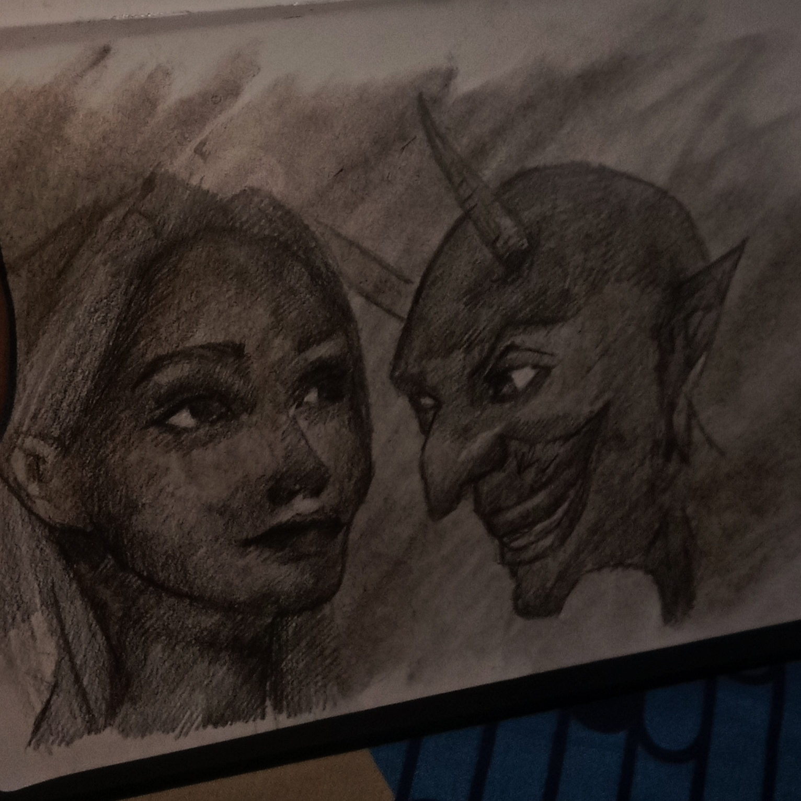

Klik untuk memutar video
Browser Anda tidak mendukung elemen video.
Browser Anda tidak mendukung elemen audio.

MASALAHKU, MASALAH KANCAKU TULUNG DANG LALEKNO
//saya tak diam//
soalnya kamu pencari masalah